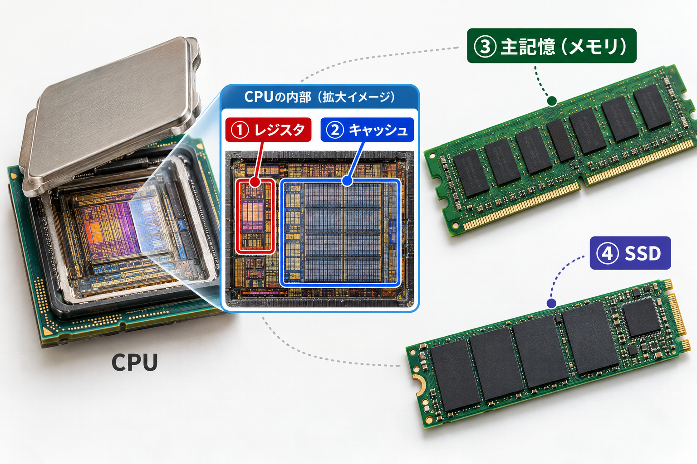
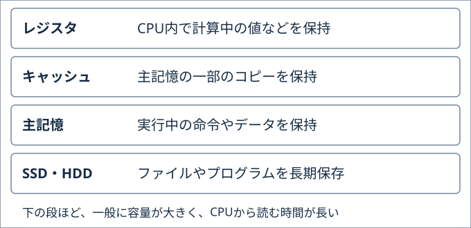

このページで学ぶこと
- 主記憶・キャッシュ・SSDの役割の違いを説明できる。
- 「場所の番号」と「その場所にある数」を区別できる。
- キャッシュのヒット・ミスと、コピーの入替えを操作で確かめられる。
- ヒット率と、平均の待ち時間を求められる。
1.まずイメージを掴む

デスクトップPCの部品の見た目と役割を結び付けるイラストです。レジスタとキャッシュはCPU内部の拡大イメージです。色分けと点線は説明用で、実際の内部配置・大きさ・配線を再現したものではありません。
- ① レジスタ · CPU内部
- 今の計算に使う数などを保持する。
- ② キャッシュ · CPU内部
- 主記憶のデータの一部をコピーして、すばやく読む。
- ③ 主記憶（メモリ）
- 実行中のプログラムの命令やデータを置く。
- ④ SSD
- ファイルやプログラムを保存する。電源を切っても残る。
本棚にある資料を何度も使うなら、必要な部分をコピーして机に置くと便利です。本棚へ取りに行く回数が減ります。ただし、机には全部の資料を置けません。
主記憶は本棚、キャッシュは手近なコピー置き場
主記憶（メインメモリ）：CPUが使う命令やデータを置く場所です。Lesson 04で見た、番号の付いた箱の集まりです。
キャッシュメモリ：主記憶の一部のデータをコピーして置く、小さくて高速な記憶場所です。CPUが必要なデータを早く読めるようにします。
コピーを作っても、主記憶にある元のデータは残ります。図書館から本を借りて元の棚が空になる、という動きとは違います。
ここでは数をデータとして使います。プログラムを書ける必要はありません。「どの箱の中身を読むか」を選ぶだけで試せます。
2.仕組みを理解する
場所の番号と、中身の数を分けよう
場所：10番地。中身：数12。これは「10番の箱に12が入っている」という意味です。CPUが10番地を読むと、受け取る数は10ではなく12です。
キャッシュには「数12」だけでなく、どの場所のコピーかも分かるように置きます。CPUが10番地を読みたいとき、キャッシュに「10番地のコピー」があるか探すためです。
コピーがあればヒット、なければミス
- CPUが「10番地の中身を読みたい」と要求する。
- キャッシュに10番地のコピーがあるか確認する。
- あればヒット：キャッシュから中身の数を読む。
- なければミス：主記憶から数を読み、次回に備えてキャッシュにもコピーを置く。
ヒット・ミスは、コピーが見つかったかどうかです。ミスは計算の間違いや故障ではありません。空のキャッシュで初めて読むと、ミスになります。
なぜコピーを全部置かないの？
キャッシュは速い反面、容量が小さく、同じ容量を作るための費用も高くなります。全部を置く代わりに、繰り返し使いそうなデータを残します。同じ場所を何度も読むことが、効果を理解する最初の手掛かりです。
満杯で新しいコピーを置くときは、どれかを入れ替えます。このLabでは最後に読んでから、最も長く使っていないコピーを選びます。取り除くのはキャッシュのコピーだけで、主記憶の元の数は消しません。
「メモリ」と「保存用のSSD」は役割が違う
| 場所 | 役割 | 通常、電源を切ると |
|---|---|---|
| レジスタ | CPU内で計算中の数などを保持 | 内容は失われる |
| キャッシュ | CPU内やその近くに、一部のデータのコピーを保持 | 内容は失われる |
| 主記憶 | 実行中のプログラムの命令やデータを保持 | 内容は失われる |
| SSD・HDD | ファイルやプログラムを長期に保存 | 内容が残る |
電源を切ると内容が失われる性質を揮発性と呼びます。作業中の内容を残したいときは、SSDなどへ保存する必要があります。CPUのキャッシュは、ファイルを長期保存する場所ではありません。

試験用語：DRAM・SRAM・L1／L2／L3
主記憶には一般にDRAM、CPUのキャッシュには一般にSRAMが使われます。どちらも揮発性です。
- DRAM：内容を保つため、定期的にデータを維持する処理（リフレッシュ）が必要です。大容量の主記憶に向きます。
- SRAM：通電中はリフレッシュなしで保持できます。高速ですが、同じ容量なら高価になるため、少量のキャッシュに向きます。
キャッシュを何段かに分ける場合、L1・L2・L3という名前を使います。一般にL1はCPUの処理部分に近く小さくて速く、L2・L3はより大きなコピー置き場です。このLabでは1段だけを扱います。
3.触ってみる
同じ場所を2回読んで比べよう
予想：「10番地の数を読む」を2回押すと、2回目の待ち時間はどうなるでしょうか？
| 場所 | 中身の数 |
|---|---|
| 10番地 | 12 |
| 11番地 | 7 |
| 12番地 | 19 |
| コピー元の場所 | コピーした数 |
|---|---|
| 空き | — |
| 空き | — |
待ち時間は実験用の目盛りです。キャッシュの確認・読出しは1単位、ミス時は主記憶からの読出し・コピーに9単位を追加（合計10単位）。キャッシュなしなら毎回9単位。実機の速度を測っているわけではありません。
おすすめの操作順・満杯時の入替え・平均の記録
まず、コピーを繰り返し使う
最初に戻して、10番地 → 10番地 → 11番地 → 10番地 → 11番地の順に読みます。5回中3回はヒットし、合計は23単位です。キャッシュなしの45単位より少なくなります。
次に、2個では置ききれないことを確かめる
続けて12番地 → 10番地を読みます。12番地を読むと、最後に読んだのが古い10番地のコピーを入れ替えます。その後10番地はミスになります。主記憶の10番地には、数12が残っています。
この「最後に使ったのが最も古いコピーを入れ替える」方法をLRUと呼びます。実際のキャッシュの方式は機種によって異なります。
このLabの簡略モデルについて
1つの番地の数を1個のコピーとして扱い、2個まで置きます。読出しだけで、主記憶の数は変えません。実際には複数の連続した番地をひとまとまり（キャッシュライン）で扱うことが一般的です。書込み時の更新方法、複数段のキャッシュ、CPU間の整合性はこの実験では扱いません。
4.試験ではこう問われる
ヒット率：読出しのうち、何回コピーが見つかったか
5回読んで3回ヒットしたら、ヒット率は3 ÷ 5 = 0.6 = 60%です。残りの2回はミスなので、ミス率は40%です。
平均の待ち時間：速い場合と遅い場合を混ぜる
Labの条件で、100回中80回はヒットするとします。ヒットは1単位、ミスは確認を含めて10単位です。
合計：80回 × 1単位 ＋ 20回 × 10単位 = 280単位
1回の平均：280単位 ÷ 100回 = 2.8単位
平均 = ヒット率 × ヒット時の時間 ＋ ミス率 × ミス時の時間
割合で書くと、0.8 × 1 ＋ 0.2 × 10 = 2.8です。
ミス時の時間の定義を確認：主記憶の時間が「キャッシュの確認・読出しに追加する時間」なら足します。問題でミス時の合計時間が与えられていれば、確認時間を二重に足しません。
初回のミスは10単位なので、キャッシュなしの9単位より長くなります。毎回新しい場所を読むだけなら、このモデルでは速くなりません。繰り返し使うデータがあることが効果を生みます。
5.確認問題
全4問です。理由も読み、場所・コピー・待ち時間を確かめましょう。
教材用のオリジナル問題です。4問すべて回答すると直近の成績を記録します。
0 / 4問回答
学習を振り返る
「10番地を読む」と「数10を読む」の違い、コピーが見つかると早い理由、入替えても元の数が残ることを説明できそうでしょうか。次は、CPUと周辺機器のやり取りを学びます。
理解できたら学習完了を記録してください。確認問題の全問正解は条件ではありません。いつでも未完了に戻せます。